TRAKOP – Usluge iskopa mini bagerom
TRAKOP je obrt specijaliziran za usluge iskopa mini bagerom, zemljane radove i uređenje terena. Pružamo kvalitetne i pouzdane usluge za privatne i poslovne klijente na području Visokog i šire okoline.
Nekoliko poslova na koje smo posebno ponosni. Ostale fotografije su u galeriji ispod.
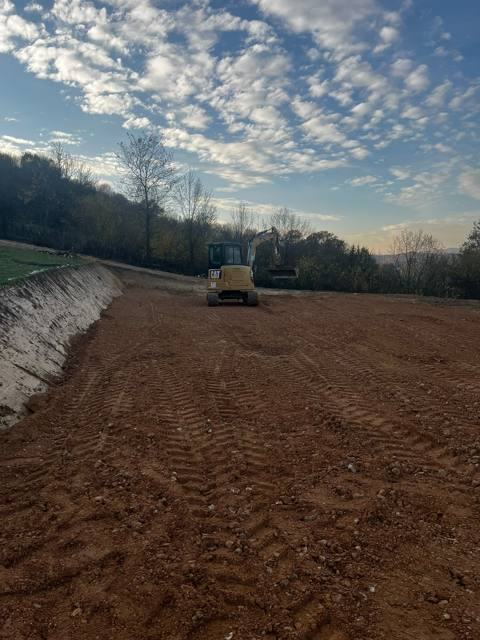
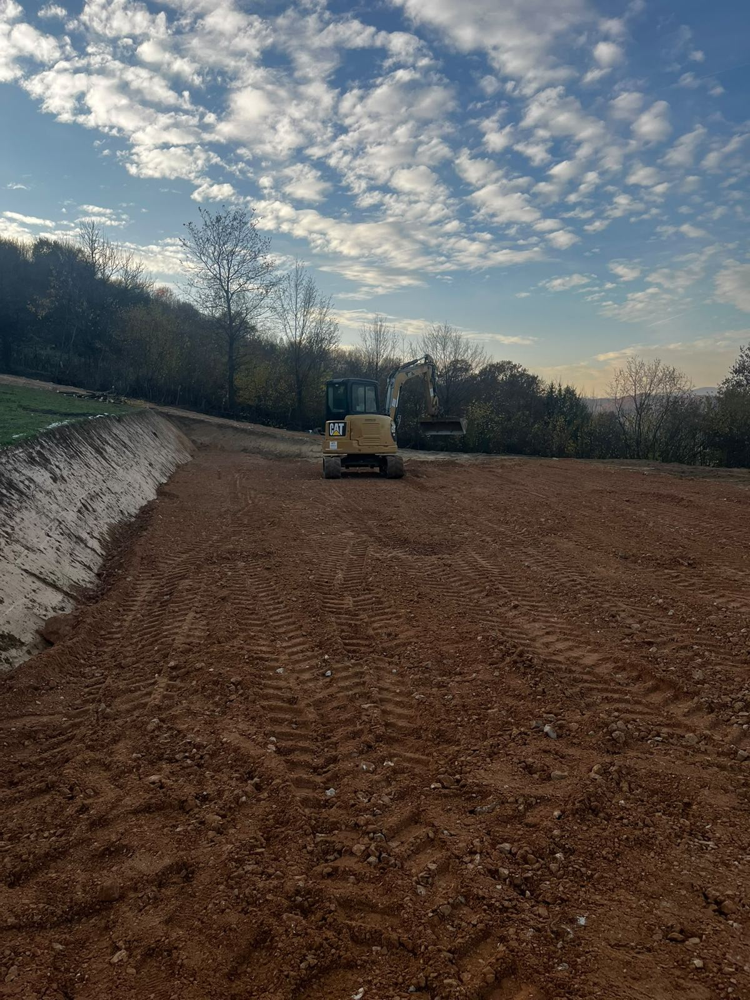
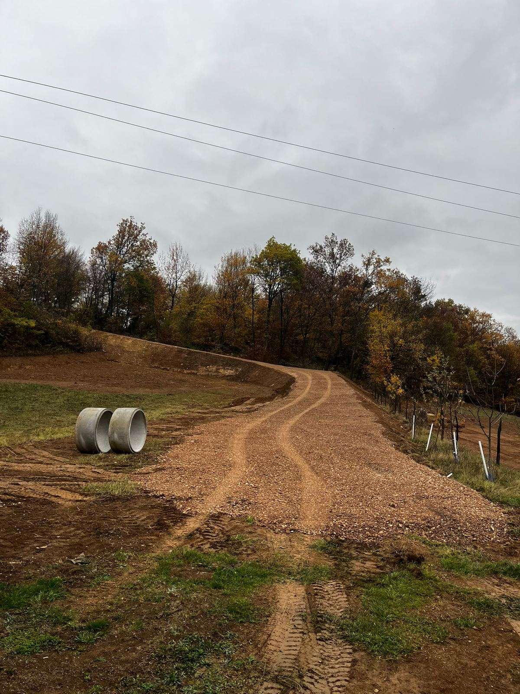
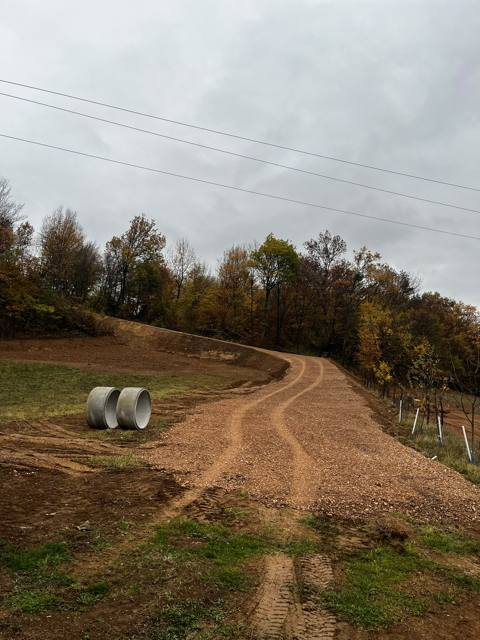
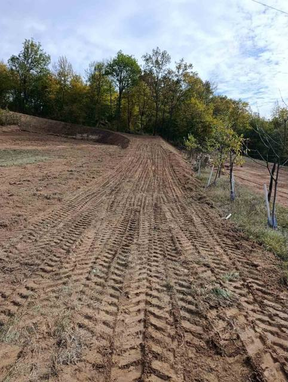
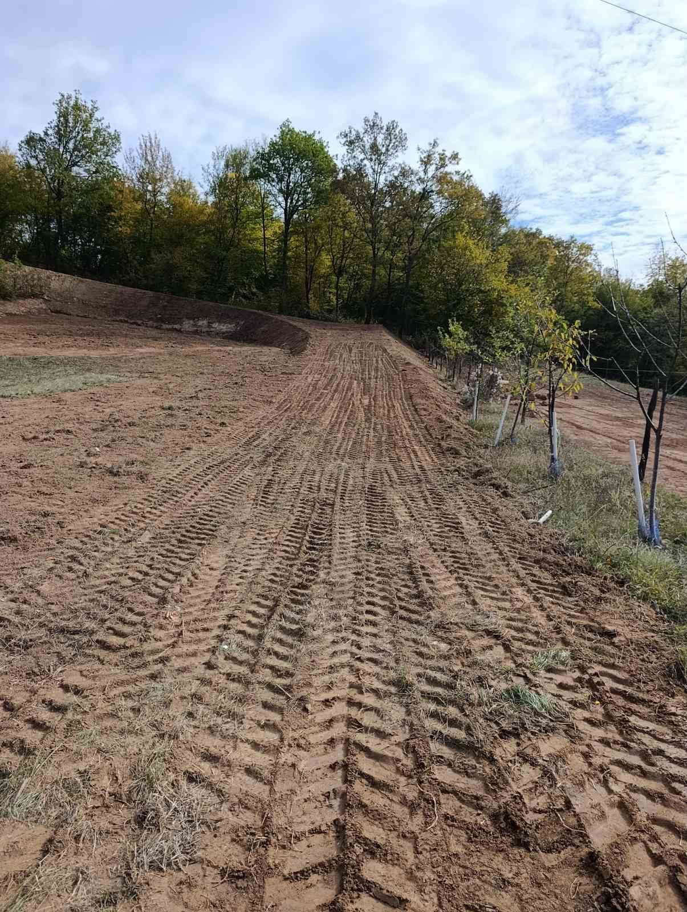
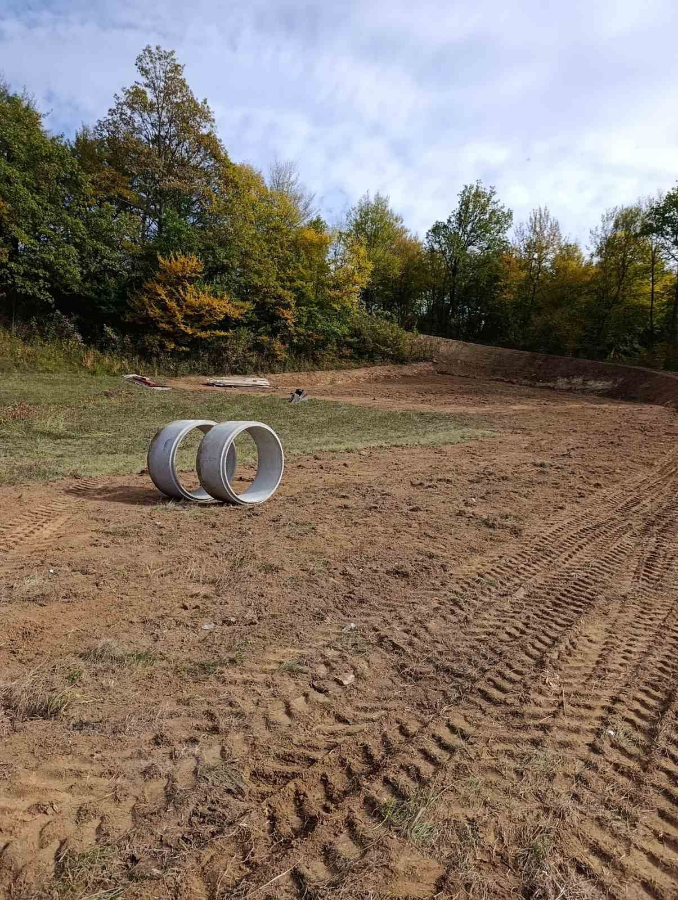
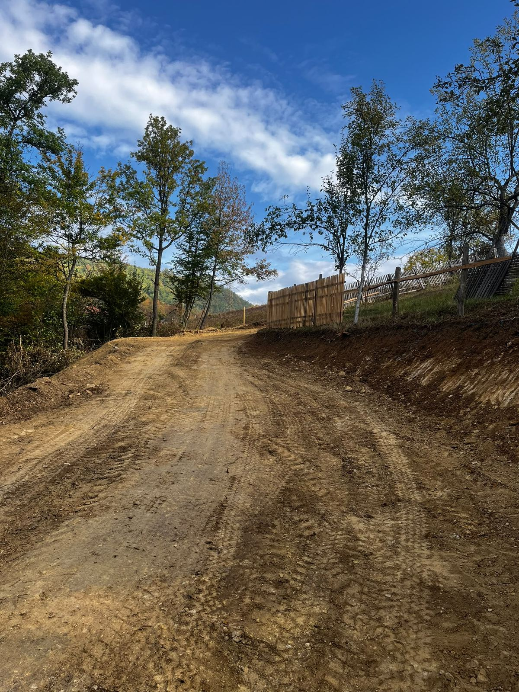
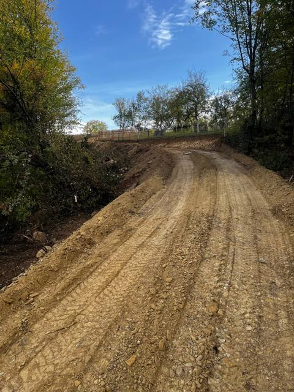
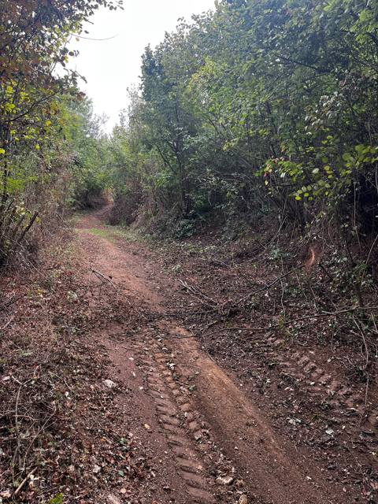
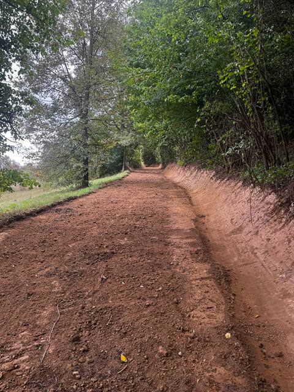
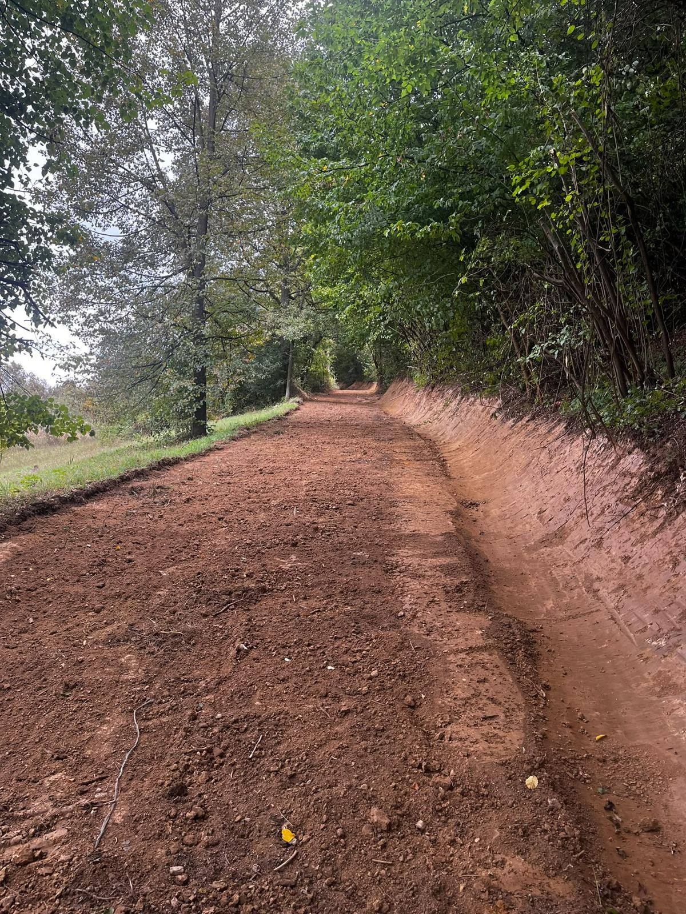
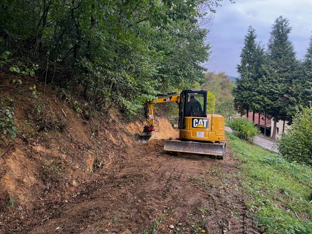
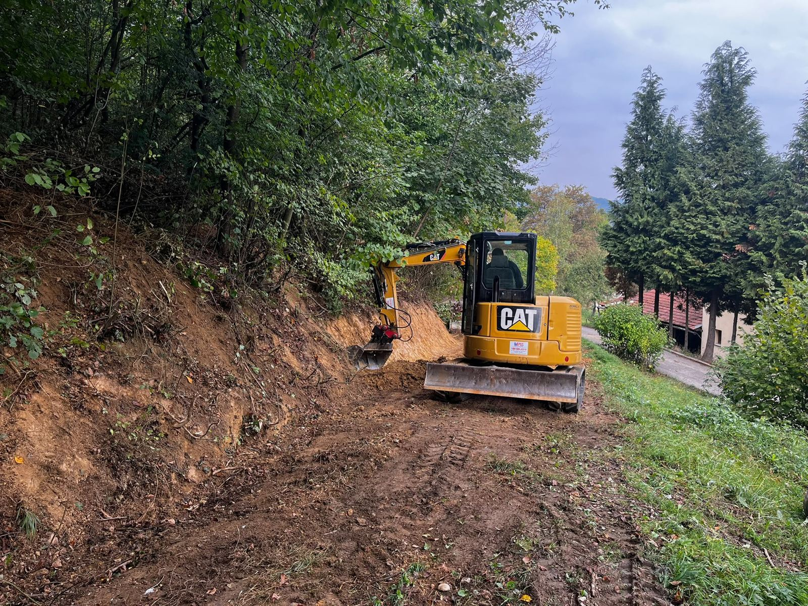
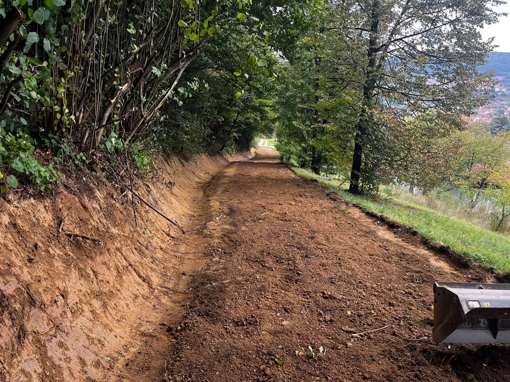
Pouzdan partner za sve vrste zemljanih i građevinskih radova.
TRAKOP – Vaš teren, naš posao!
Recite nam šta treba uraditi i gdje. Ako možete, pošaljite sliku terena porukom.
Za veće poslove dođemo pogledati teren i damo vam ponudu.
Dođemo u dogovoreni termin, završimo posao i teren ostavimo uredno.
94 fotografija s naših gradilišta. Kliknite na sliku za veći prikaz.
Kontaktirajte nas i zatražite ponudu. Vaš projekat počinje kvalitetnom pripremom!
062/344-770Čajengradska bb, Visoko